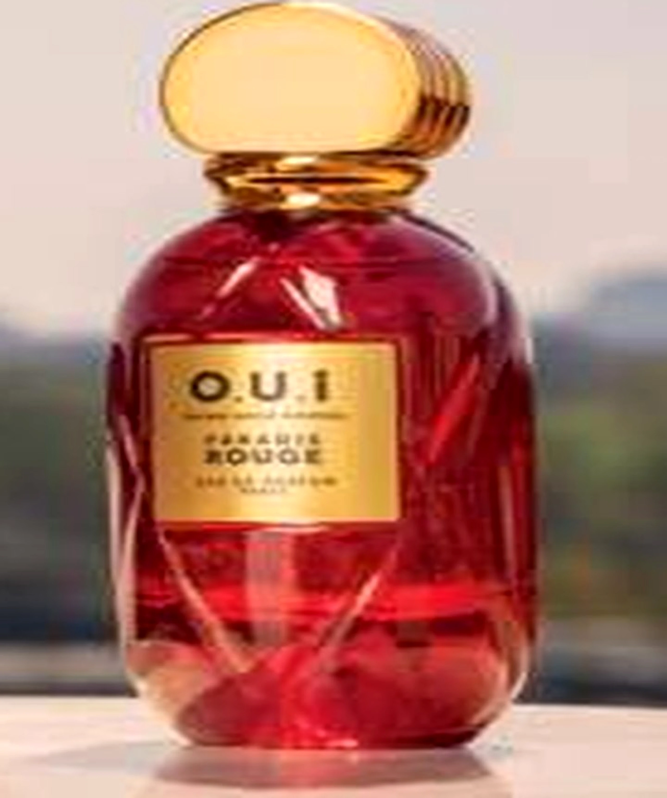
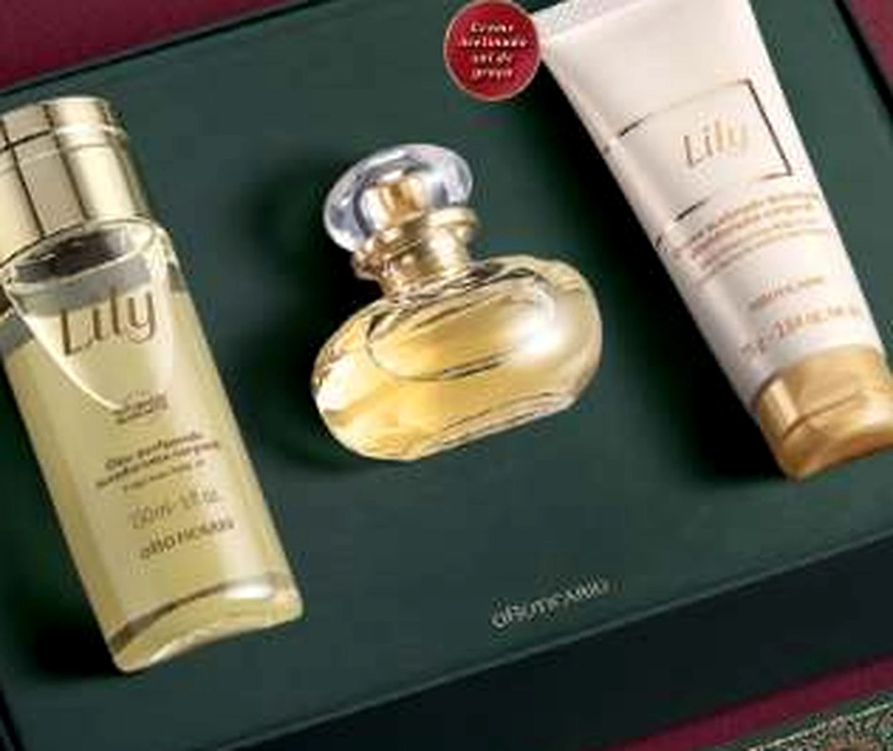
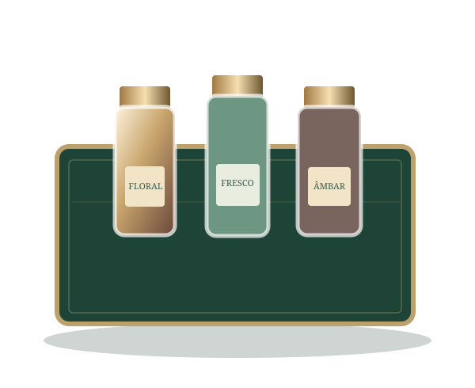

Como descobrir sua assinatura olfativa
Comece pelo que você sente: leveza, intensidade, delicadeza ou presença.
Perfumes para deixar sua marca. Cores para expressar quem você é. Pequenos rituais que transformam o seu dia.
04 marcas
2.765 referências no catálogo

O DETALHE FAZ TUDO. ✳Quatro caminhos para descobrir novos favoritos. Qual deles combina com o seu momento?
Imagens retiradas dos catálogos disponibilizados para a vitrine. Preços e promoções visíveis nas fotografias podem estar desatualizados.
Quatro marcas, diferentes identidades e um jeito único de encontrar o que você ama.
Vitrine independente, sem vínculo institucional com as marcas. As fotografias são dos catálogos: confirme condições, preços e disponibilidade na loja parceira.

THEPresentear é transformar um momento em lembrança. Explore kits, fragrâncias e sugestões de cuidado para quem merece um carinho especial.
Produtos sujeitos a conferência na loja parceira.Refine a busca por tipo de produto e encontre opções no catálogo.
Exemplos ilustrativos por enquanto. Importe a lista oficial para ver todos os produtos.
Fotos: recortes de páginas dos catálogos, não imagens individuais de produtos. Valores, descrições e disponibilidade devem ser conferidos no canal de destino. Esta vitrine não processa compras.

Responda a quatro perguntas sobre estilo, intensidade, ocasião e orçamento. Nosso consultor sugere uma linha para você explorar.
Prefere um floral delicado, um amadeirado marcante, um fresco para o dia a dia ou um gourmand envolvente? Navegue pelas famílias presentes em O Boticário.
Crie um ritual de perfumação conceitual inspirado em boutiques internacionais e descubra famílias olfativas que combinam com o seu estilo.
As combinações são inspirações criativas; teste na pele e confira as orientações oficiais antes de utilizar dois produtos juntos.
O frescor encontra a delicadeza floral, criando uma atmosfera leve e elegante.
Explore presentes e kits das marcas da nossa vitrine. Personalize uma mensagem especial para tornar a escolha ainda mais marcante.
Comece pelo que você sente: leveza, intensidade, delicadeza ou presença.
Uma introdução visual aos caminhos florais, frescos, amadeirados e intensos.
Uma mensagem especial pode tornar a experiência ainda mais memorável.
Digite uma dedicatória para visualizar uma prévia ilustrativa de seu cartão. Nenhum dado é enviado.
Seu carinho em cada detalhe.